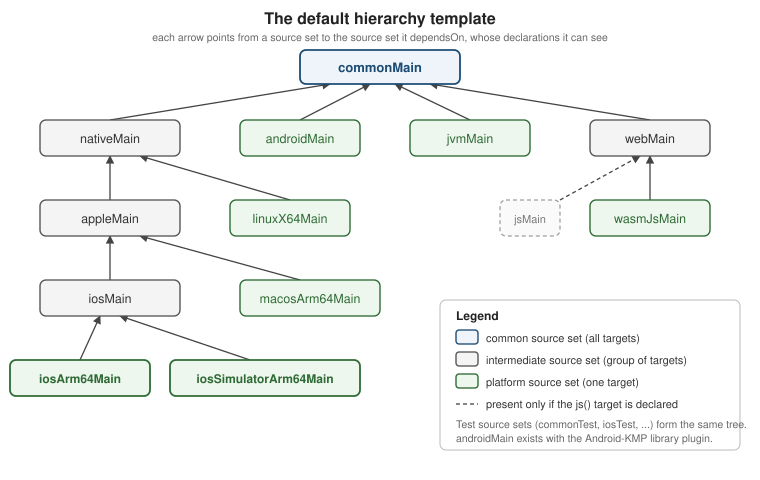

Project Structure, Targets, Source Sets and the Hierarchy Template
|
This content was generated with the assistance of AI and should be verified against the official documentation before being relied on in production. |
Every Kotlin Multiplatform (KMP) project answers the same three questions: which platforms does the code run
on (the targets), where does each line of code live (the source sets), and how are the Gradle modules
arranged around them (the project structure). This page explains the vocabulary, shows how the default
hierarchy template creates intermediate source sets such as nativeMain, appleMain, iosMain and webMain
for you, and ends with the module layout that the Kotlin Multiplatform IDE plugin generates today.
The examples target the baseline of this section: Kotlin 2.4.20 and the Kotlin Multiplatform Gradle plugin,
Compose Multiplatform 1.12.1, AGP 9.4.1 with the com.android.kotlin.multiplatform.library plugin, and
Xcode 26.4. They are slices of TrailMate Everywhere, the multiplatform version of the
Android section’s TrailMate app (package com.example.trailmate). The Kotlin
language itself is not taught here; see the Kotlin Reference.
For how the compilers behind each target work, see
How KMP Compiles; for the full Gradle DSL,
see Gradle Configuration and Compatibility.
The vocabulary: targets, compilations and source sets
Three terms recur in every KMP build file. They are easy to confuse because source sets and compilations have
similar names (iosArm64Main is both a source set and the name of a compilation’s default source set).
| Term | Meaning | TrailMate example |
|---|---|---|
Target |
A platform that the code is compiled for, declared in the |
|
Compilation |
One compiler invocation for a target. Every target has a |
|
Source set |
A named directory of Kotlin files, |
|
The relationship is many-to-many. A platform source set such as iosArm64Main belongs to exactly one target.
An intermediate source set such as iosMain or appleMain is shared by several targets, and the compiler
compiles its code once for every target that includes it. commonMain is the root: it is shared by every
target, which is why it may only use APIs that exist everywhere.
The naming rule is mechanical: <target or group><Main|Test>. Production code sits in …Main, tests in
…Test. Directories follow the same rule:
sharedLogic/
build.gradle.kts
src/
commonMain/kotlin/ (1)
commonTest/kotlin/
androidMain/kotlin/
jvmMain/kotlin/
iosMain/kotlin/ (2)
appleMain/kotlin/
webMain/kotlin/| 1 | Code and resources shared by all targets. |
| 2 | An intermediate source set: iOS device and simulator share it. |
A source set directory that has no matching target is simply ignored by the build, which makes it a common source of silent mistakes (see Common mistakes).
Declaring targets
Targets are declared in the module’s build.gradle.kts. The Kotlin Gradle plugin creates the
source sets, the compilations and the type-safe accessors for every target you declare.
// sharedLogic/build.gradle.kts
import org.jetbrains.kotlin.gradle.ExperimentalWasmDsl
plugins {
alias(libs.plugins.kotlinMultiplatform)
alias(libs.plugins.androidKotlinMultiplatformLibrary)
alias(libs.plugins.kotlinSerialization)
}
kotlin {
android {
namespace = "com.example.trailmate.shared"
compileSdk = 37
minSdk = 26
}
jvm()
iosArm64()
iosSimulatorArm64()
@OptIn(ExperimentalWasmDsl::class)
wasmJs {
browser()
}
sourceSets {
commonMain.dependencies {
implementation(libs.kotlinx.coroutines.core)
implementation(libs.ktor.client.core)
}
commonTest.dependencies {
implementation(kotlin("test"))
}
}
}The Android target uses the Android-KMP library plugin, configured in kotlin \{ android \{ … } }; it is
covered in The Android Target and AGP 9. The two iOS
targets are the ones to declare today: iosArm64 is the physical device and iosSimulatorArm64 is the simulator
on Apple silicon Macs. The older ios() shortcut was removed in Kotlin 2.2.0, and iosX64 (the Intel simulator)
is a Tier 3 target, so declare it only if your team still has Intel Macs. Kotlin/Wasm targets
(wasmJs) are Beta; the other targets in this example are Stable.
Compilations and metadata
A compilation turns source sets into one binary. For a target such as iosArm64, the main compilation
compiles commonMain, nativeMain, appleMain, iosMain and iosArm64Main together into a single
Kotlin/Native library, and the test compilation does the same for the …Test source sets, adding the main
output to the classpath.
On top of the per-target compilations, the plugin also runs metadata compilations for every shared source set.
Compiling commonMain to metadata is what lets the IDE and the compiler check that commonMain code only calls
APIs that exist on all declared targets, and it is the artifact a library publishes so that consumers' shared
code can resolve it. When you see an error such as an unresolved UIDevice in commonMain, that is the metadata
compilation telling you that the declaration is not common.
Custom compilations (for example an integrationTest compilation on the JVM target) are configured through the
compilations container; they are covered in
Gradle Configuration and Compatibility.
The default hierarchy template
Hand-wiring intermediate source sets used to be the most tedious part of a KMP build. Since Kotlin 1.9.20, the plugin applies a default hierarchy template automatically: it looks at the targets you declared and creates every shared source set that makes sense for them. The template is a Stable feature.

The tree shows only the production source sets; the Test source sets form an identical tree. Source sets whose
targets are not declared are never created, so a project with only android, iosArm64 and
iosSimulatorArm64 gets commonMain, androidMain, nativeMain, appleMain, iosMain and the two iOS leaf
source sets, and nothing else.
| Source set | Compiled for | Typical content |
|---|---|---|
|
every target |
Domain model, repositories, ViewModels, use of Ktor and kotlinx libraries |
|
all Kotlin/Native targets (iOS, macOS, tvOS, watchOS, Linux, Windows, Android Native) |
Code that needs |
|
iOS, macOS, tvOS and watchOS targets |
Foundation-based code shared between iOS and macOS, for example |
|
|
UIKit and other iOS-only APIs, the |
|
the macOS, tvOS and watchOS targets |
Platform-specific shared code for each Apple family |
|
the Linux, Windows (MinGW) and Android Native targets |
Rare in apps; used by CLI tools and libraries |
|
|
Browser APIs through |
|
the JVM target and the Android target |
|
The names are conventions that carry meaning: nativeMain is the same in every project, and the
plugin provides type-safe accessors for all of them, so there is no by getting or by creating boilerplate:
// sharedLogic/build.gradle.kts
kotlin {
iosArm64()
iosSimulatorArm64()
jvm()
sourceSets {
// type-safe accessors: no `val iosMain by getting`
iosMain.dependencies {
implementation(libs.ktor.client.darwin)
}
jvmMain.dependencies {
implementation(libs.ktor.client.okhttp)
}
}
}Accessing a template source set before declaring one of its targets produces a build warning, because the
source set does not exist yet. Declare the targets first, then configure sourceSets.
A subtle consequence of the template deserves attention. Despite their names, appleMain and nativeMain see
the union of the APIs of the targets that actually exist in the project. In a project that only declares the
two iOS targets, nativeMain has access to the full iOS API even though it is nominally the "all native
targets" source set. Code that works because of this may stop compiling the day a Linux or watchOS target is
added, so keep truly iOS-only code in iosMain.
Customizing the template
The template itself cannot be edited: there is no supported way to change the dependsOn relations between
the source sets it creates, and a project may not redefine what nativeMain means. You have three options
instead.
| Situation | What to do |
|---|---|
All your intermediate source sets are already in the template |
Remove every manual |
You need an extra intermediate source set the template lacks |
Re-apply the template with |
Your hierarchy conflicts with the template’s names |
Use different source set names, or opt out with |
The second case is the common one. Suppose a TrailMate command-line tool shared parsing code between the JVM and macOS targets, with no template source set that covers exactly those two:
// trailCli/build.gradle.kts
kotlin {
jvm()
macosArm64()
// Keep the default hierarchy and add one custom intermediate source set
applyDefaultHierarchyTemplate()
sourceSets {
val jvmAndMacosMain by creating {
dependsOn(commonMain.get())
}
macosArm64Main.get().dependsOn(jvmAndMacosMain)
jvmMain.get().dependsOn(jvmAndMacosMain)
}
}A custom source set that mixes JVM and Native targets can only contain code that compiles for both, which in
practice means pure Kotlin plus multiplatform libraries. JetBrains is working on an API for user-defined
hierarchy templates (the applyHierarchyTemplate \{ } block), but it is still in development and not
recommended for production builds, so treat it as Experimental.
What code may live where
The rule is: a source set may use the declarations of itself, of every source set it depends on (directly or indirectly), and of the libraries on its own classpath. Nothing else.
| Source set | May use | May not use |
|---|---|---|
|
The Kotlin standard library, kotlinx libraries, other common code, |
|
|
Everything in |
|
|
Everything in |
UIKit if a non-iOS Apple target is declared |
|
Everything in |
|
|
Everything in |
|
|
Everything in |
Android SDK, |
|
Everything in |
JVM and Native APIs |
Apple’s platform libraries (Foundation, UIKit, CoreLocation and the rest) are bundled with the Kotlin/Native compiler and need no extra dependency; they are only compiled on a macOS host. See expect/actual and Calling Platform APIs for how common code reaches these APIs without importing them.
Here is the function platformName() placed in the most shared source set that can hold each implementation.
The expect declaration is in commonMain; actuals sit one per leaf, except on the web, where webMain
serves both web targets at once:
// sharedLogic/src/commonMain/kotlin/com/example/trailmate/Platform.kt
package com.example.trailmate
expect fun platformName(): String// sharedLogic/src/androidMain/kotlin/com/example/trailmate/Platform.android.kt
package com.example.trailmate
import android.os.Build
actual fun platformName(): String = "Android ${Build.VERSION.SDK_INT}"// sharedLogic/src/jvmMain/kotlin/com/example/trailmate/Platform.jvm.kt
package com.example.trailmate
actual fun platformName(): String = "JVM ${System.getProperty("java.version")}"// sharedLogic/src/iosMain/kotlin/com/example/trailmate/Platform.ios.kt
package com.example.trailmate
import platform.UIKit.UIDevice
// One actual covers iosArm64 and iosSimulatorArm64
actual fun platformName(): String =
UIDevice.currentDevice.systemName() + " " + UIDevice.currentDevice.systemVersion// sharedLogic/src/webMain/kotlin/com/example/trailmate/Platform.web.kt
package com.example.trailmate
// One actual covers both js() and wasmJs() because webMain is shared by them
actual fun platformName(): String = "Web"On the Swift side, the iOS framework exposes the function in a class named after the file that holds the
actual declaration: Platform.ios.kt becomes Platform_iosKt.
// iosApp/iosApp/PlatformLabel.swift
import SwiftUI
import Shared // the framework produced by the Gradle module
struct PlatformLabel: View {
var body: some View {
Text("Running on \(Platform_iosKt.platformName())")
}
}Dependencies and visibility between source sets
Each source set owns its dependencies, and dependencies flow down the dependsOn tree: a library added to
commonMain is visible in every source set below it, while a library added to iosMain is visible only to
iosMain and its children. The IDE and the compiler enforce this, which is what stops an android.* import from
slipping into shared code.
// sharedLogic/build.gradle.kts
kotlin {
sourceSets {
commonMain.dependencies {
// multiplatform libraries: visible to every target
implementation(libs.ktor.client.core)
implementation(libs.kotlinx.serialization.json)
api(libs.kotlinx.coroutines.core) // part of this module's public API
}
androidMain.dependencies {
implementation(libs.ktor.client.okhttp)
}
iosMain.dependencies {
implementation(libs.ktor.client.darwin)
}
commonTest.dependencies {
implementation(kotlin("test"))
implementation(libs.ktor.client.mock)
}
}
}Three details are worth remembering:
-
A dependency declared in
commonMainmust itself be multiplatform and publish metadata for every target the module declares; otherwise Gradle cannot resolve it for the shared source set. -
apiversusimplementationmatters most for the iOS framework: onlyapidependencies (and the modules you explicitlyexport()) can be exposed in the generated Swift API. See Dependencies, klibs.io, cinterop and SwiftPM Import. -
Each leaf test source set (
iosArm64Test) inherits from its parents (iosTest,appleTest,nativeTest,commonTest) in the same way as the production tree, so a shared test incommonTestruns on every target.
Tests follow the same tree: put as many tests as possible in commonTest, so they run on every target, and add
iosTest, jvmTest or the opt-in androidHostTest / androidDeviceTest only for platform-specific checks. See
Testing Multiplatform Code.
Manual dependsOn (legacy)
Before the template existed, every intermediate source set was created and connected by hand. You will still meet this in older projects and tutorials, so it is worth recognizing, and it explains what the template does for you. This style also relied on the Commonizer, the tool that merges the platform libraries of several Apple targets into one view so that shared Apple code can compile; today the plugin handles that for you.
// sharedLogic/build.gradle.kts (LEGACY: do not write this in new projects)
kotlin {
iosArm64()
iosSimulatorArm64()
sourceSets {
val commonMain by getting
val iosMain by creating {
dependsOn(commonMain)
}
val iosArm64Main by getting {
dependsOn(iosMain)
}
val iosSimulatorArm64Main by getting {
dependsOn(iosMain)
}
}
}The replacement is to delete the sourceSets block entirely: with iosArm64() and iosSimulatorArm64()
declared, iosMain already exists with both leaves attached. Mixing explicit dependsOn edges into a
project that uses the template produces a build warning that suggests removing them or disabling the template.
Other legacy pieces disappear with it: the ios() shortcut (removed in Kotlin 2.2.0) is replaced by explicit
iosArm64() and iosSimulatorArm64(), and the hand-managed Commonizer settings are no longer needed.
Recommended project layout
The Kotlin Multiplatform IDE plugin and the web wizard generate a layout in which app entry points are separate modules and the shared code lives in one or two library modules. This keeps platform-specific configuration (AGP, Xcode, packaging, Wasm bundling) out of the shared code and avoids unnecessary dependencies.
com.android.application"] desktopApp["desktopApp
JVM + Compose desktop"] webApp["webApp
wasmJs bundle"] iosApp["iosApp
Xcode project (Swift)"] sharedUI["sharedUI
Compose Multiplatform UI"] sharedLogic["sharedLogic
domain, data, ViewModels"] androidApp --> sharedUI desktopApp --> sharedUI webApp --> sharedUI iosApp -->|"Shared.framework"| sharedUI iosApp -.->|"native UI path"| sharedLogic sharedUI --> sharedLogic
The graph is the module layout of TrailMate Everywhere. Solid arrows are Gradle dependencies (the iosApp
arrow is a framework embedded by Xcode); the dotted arrow is the alternative in which SwiftUI replaces Compose and
the iOS app consumes only the logic module.
| Module | Role |
|---|---|
|
A |
|
An Xcode project, not a Gradle module. It contains the SwiftUI or UIKit entry point and embeds the framework produced by a shared module. |
|
A JVM module with a |
|
A module with the |
|
Business logic: domain model, repositories, networking, persistence and ViewModels. No Compose dependency. |
|
Compose Multiplatform screens, theme, resources and the root |
If every app uses shared UI, a single shared module is enough. Split sharedLogic from sharedUI as soon as
any app uses native UI, for example SwiftUI on iOS, so that those apps do not pull in Compose Multiplatform. A
project that also has a server adds a server module and a core module (models and validation) shared between
the server and the clients.
The Gradle side is a plain multi-module build with one detail: type-safe project accessors, so that modules are
referenced as projects.sharedLogic rather than by string path.
// settings.gradle.kts
rootProject.name = "TrailMateEverywhere"
enableFeaturePreview("TYPESAFE_PROJECT_ACCESSORS")
pluginManagement {
repositories {
google()
mavenCentral()
gradlePluginPortal()
}
}
dependencyResolutionManagement {
repositories {
google()
mavenCentral()
}
}
include(":sharedLogic")
include(":sharedUI")
include(":androidApp")
include(":desktopApp")
include(":webApp")The sharedUI module applies the same two plugins as sharedLogic, plus composeMultiplatform and
composeCompiler, declares the same targets, and puts api(projects.sharedLogic) plus the Compose libraries in
commonMain.dependencies, so UI modules see the logic module. The androidApp module is a plain
com.android.application module that depends on projects.sharedUI.
The Android application plugin and its built-in Kotlin support are explained in The Android Target and AGP 9; the underlying Android concepts are in Android Project Structure and Gradle.
The legacy composeApp module
Projects created before AGP 9 and by older wizard versions have a single module, usually called composeApp,
that holds the shared Compose code and the Android, desktop and web entry points. It works with AGP 8 but is
legacy: with AGP 9 the Android entry point has to leave it. The migration is mechanical.
In composeApp (legacy) |
After the split |
|---|---|
Shared code in |
Moves to |
|
Moves to |
|
Moves to |
|
Moves to |
iOS project depends on |
Xcode build phase now runs |
The step-by-step move is documented in the recommended-structure article, and the AGP-specific migration in The Android Target and AGP 9.
One shared module or several
An iOS app can consume one Kotlin framework or several. The right choice depends on how you want to expose the code.
| Single shared module | Several shared modules | |
|---|---|---|
Gradle |
One |
|
Xcode |
One framework: |
One import per framework, or one umbrella that re-exports the rest |
Binary size and runtime |
One Kotlin/Native runtime |
Several frameworks each embed the runtime and duplicate shared dependencies unless combined |
Fit |
Small apps; every platform uses shared UI |
Larger apps; native UI on some platforms, several teams, or a growing code base |
Multiple independent Kotlin frameworks in one iOS app are discouraged: each contains its own copy of the Kotlin runtime, standard library and common dependencies, and objects cannot be exchanged between them. The remedy is an umbrella framework: one module that depends on the others and exports them as a single framework.
// sharedUI/build.gradle.kts (umbrella: re-exports sharedLogic into the one iOS framework)
kotlin {
listOf(iosArm64(), iosSimulatorArm64()).forEach { iosTarget ->
iosTarget.binaries.framework {
baseName = "Shared"
isStatic = true
// sharedLogic must be an `api` dependency of this module for export() to work
export(projects.sharedLogic)
}
}
sourceSets {
commonMain.dependencies {
api(projects.sharedLogic)
}
}
}With the framework named Shared, Swift code sees the declarations of both modules through a single
import Shared:
// iosApp/iosApp/TrailListView.swift
import SwiftUI
import Shared // contains sharedUI AND the exported sharedLogic types
struct TrailRow: View {
let trail: Trail // declared in sharedLogic, visible through the umbrella
var body: some View { Text(trail.name) }
}An umbrella framework is configured in the module that produces it; the full list of binaries options
(framework, staticLib, XCFramework, export, isStatic) is in
Gradle Configuration and Compatibility,
and the ways Xcode consumes the result (direct integration, CocoaPods, SwiftPM) are in
iOS Integration Options. The shared-UI variant on iOS
is in Compose Multiplatform on iOS. Note that
Multiplatform Projects in the Apple section is about Apple’s own
multi-platform targets, not Kotlin Multiplatform. The repository choice (monorepo or several repositories) is
independent of the module layout; see
Adopting KMP in Existing Apps.
Common mistakes
-
Directory without a target. Creating
src/iosMain/kotlinin a module that never declaresiosArm64()oriosSimulatorArm64(): nothing compiles it, and no error is raised. Declare the targets first. -
Platform imports in
commonMain.import platform.Foundation.NSDateorimport android.util.Login common code fails in the metadata compilation. Move the code to the matching source set behind anexpectdeclaration or an interface. -
Treating
nativeMainas "everything native". It sees the APIs of whichever native targets you declared, so code that compiles today may break after adding a Linux or watchOS target. Keep iOS-only code iniosMain. -
Writing
dependsOnon top of the template. Addingval iosMain by creatingin a project that already getsiosMainfrom the template triggers the "explicit dependsOn edges" warning; remove the manual wiring. -
Using
ios(). Removed in Kotlin 2.2.0; declareiosArm64()andiosSimulatorArm64()explicitly. -
Android entry point inside the shared module. Under AGP 9 the
com.android.applicationplugin cannot be applied next to the KMP plugin; createandroidApp. -
Several frameworks in one iOS app. Each duplicates the Kotlin runtime and common libraries; combine them into an umbrella framework.
-
Putting Compose in the logic module. It forces Compose dependencies on native-UI apps. Keep Compose in
sharedUI.